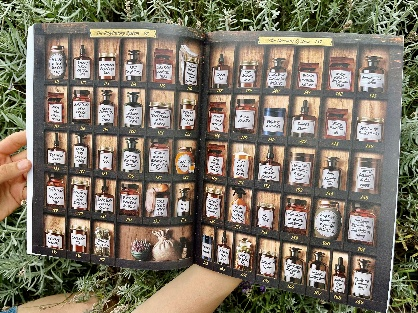
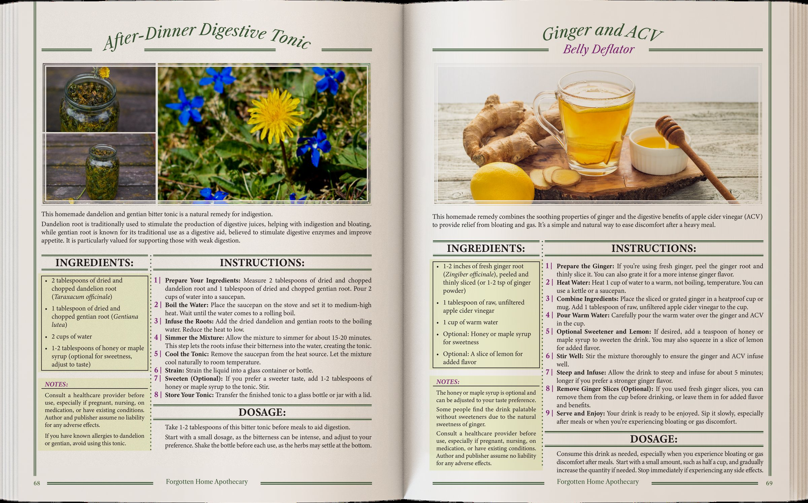
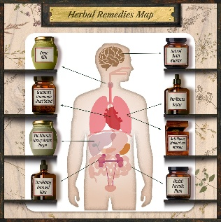
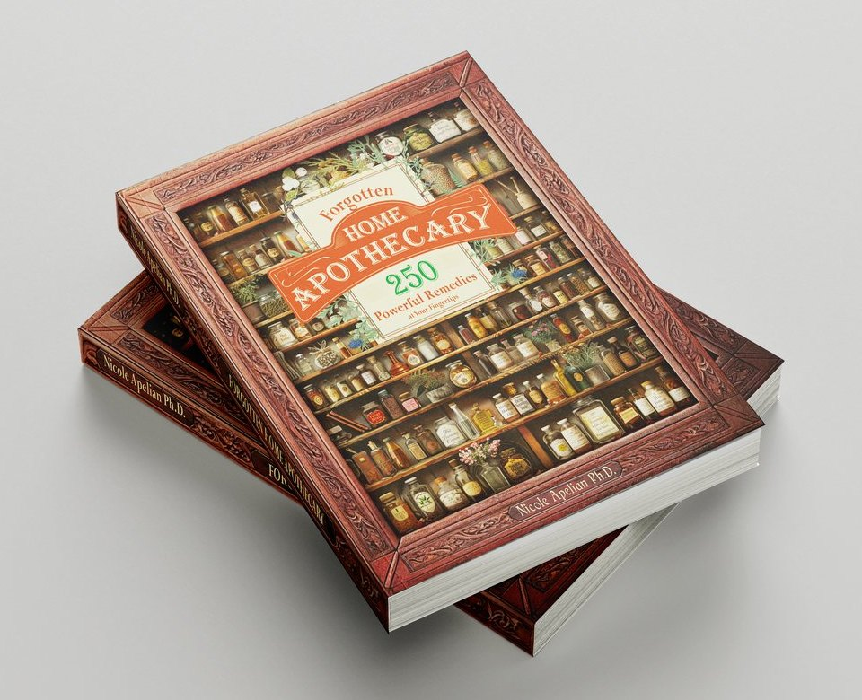

{{r.title}}
{{r.body}}
{{r.page}}
Last Books Available. Get Yours Before They’re All Gone!
Written by Dr. Nicole Apelian, an herbalist with over 30 years of experience, who wants to bring the apothecaries of the past into the house of each person who seeks a natural way of healing.
Click on the gut issue below to find the remedy you’ve been looking for!

Unlike others, this book is very easy to use! The first thing you’ll see when you open the book is your new Apothecary. Here you’ll find all the 250 remedies, organized on shelves by body systems.
Each page of the table of contents displays the remedies found inside the book, and the page you’re going to find it on.


There, you will find step-by-step instructions, color pictures, measurements and serving size guidance.
Follow the step-by-step guide to prepare each remedy at home. The intuitive layout makes it easy to quickly find the recipe you’re looking for and prepare it in your own kitchen.
{{b.lead}}
{{b.text}}
The Forgotten Home Apothecary was printed in a limited edition, with color pictures, containing 250+ remedies that can help you and your family. Now you can find all the remedies you need for the issues you are interested in in just one place. Just scroll down and click on the button below to get your own copy.

After you receive your book, you will have a full 60 days to put it to good use and start managing your health naturally. If at any time during those 60 days, you are not COMPLETELY satisfied with your purchase, send us an email or message and we will refund you the price of the book. It’s as simple as that!
You can choose to keep the physical book, even if we refund you the full price.
{{p}}
{{q.a}}